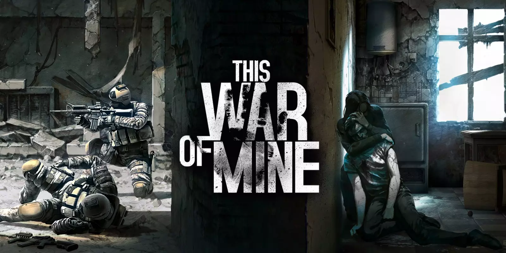

The War Of Mine
The War of Mine - gra komputerowa opowiadająca o przetrwaniu w czasie wojny, wyprodukowana przez polskie studio 11 bit studios. inspirowana oblężeniem Sarajewa.
W przeciwieństwie do innych gier poruszających tematykę wojenną, gracz nie wciela się w żołnierza – bohatera wojennego, lecz cywila – ofiarę wojny, starającego się przeżyć w ciężkich warunkach. Gracz jest zmuszony dokonywać wyborów moralnych w celu zapewnienia żywności, lekarstw i schronienia.